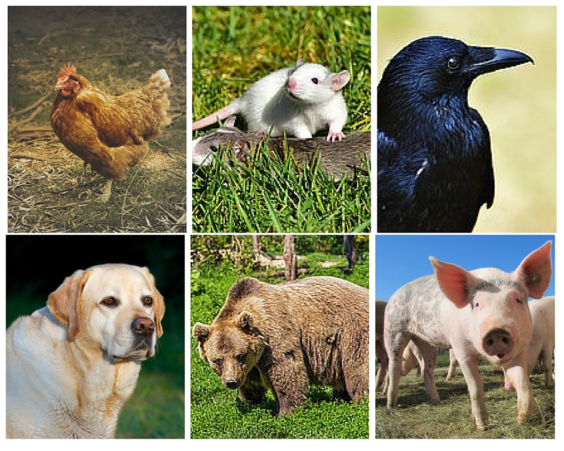
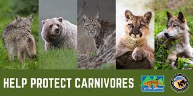
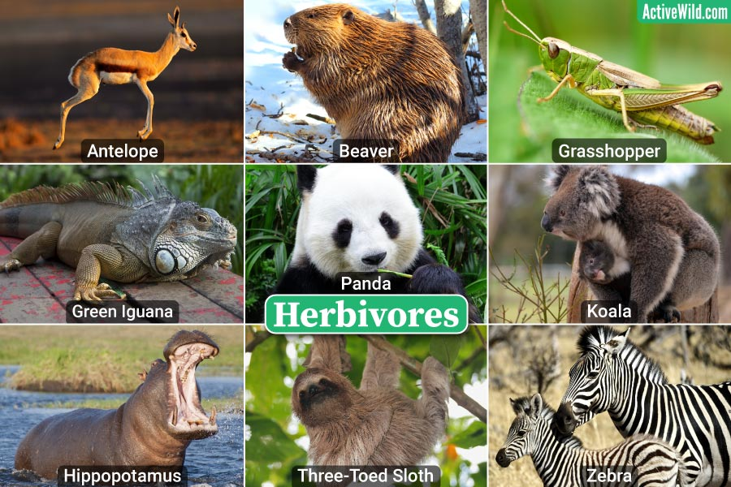
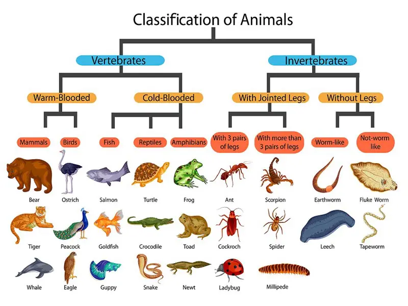

Types of Animals
1)
Omnivores
An omnivore is an organism that regularly consumes a variety of material, including plants, animals, algae, and fungi. They range in size from tiny insects like ants to large creatures—like people.
Human beings are omnivores. People eat plants, such as vegetables and fruits. We eat animals, cooked as meat or used for products like milk or eggs. We eat fungi such as mushrooms. We also eat algae, in the form of edible seaweeds such as nori, which are used to wrap sushi rolls, and sea lettuce, eaten in salads. Bears are omnivores, too. They eat plants like berries as well as mushroom fungi and animals like salmon or deer.
Omnivores are a major part of the food web, a description of which organisms eat which other organisms in the wild. Organisms in the food web are grouped into trophic, or nutritional, levels. There are three trophic levels. Autotrophs, organisms that produce their own food, are the first trophic level. These include plants and algae. Herbivores, organisms that consume plants and other autotrophs, are the second trophic level. Both omnivores and carnivores, meat eaters, are the third trophic level.
Autotrophs are called producers, because they produce their own food. Herbivores, carnivores, and omnivores are consumers. Herbivores are primary consumers. Carnivores and omnivores are secondary consumers.
Most birds are omnivores. Robins pull worms from the ground. They also feast on berries. Ostriches graze on plants and grasses. They also eat lizards and insects.
Many mammals are omnivorous. Skunks eat rodents, lizards, honeybees, leaves, grasses, nuts, fungi, and almost anything else they can find.
Some reptiles are also omnivorous. Box turtles feed on fish, frogs, rodents, and many other creatures, but they also eat flowers, berries, and roots.
Fish can also be omnivorous. The opaleye, a fish that feeds mostly on seaweeds along the Pacific Coast of North America, also eats small creatures found among the seaweed.
Some insects are omnivores. Ants eat seeds, nectar, and, often, other insects.
Some omnivores are scavengers, creatures that eat the meat of dead animals. Black bears eat mostly nuts, berries, and other fruit. But if they find a dead animal, they eat it.
Many animals that are often thought of as carnivores are in fact omnivores. Red foxes, for example, prey on rabbits, but they also eat fruit.
Some animals that are thought of as herbivores also eat animals. Squirrels eat mostly nuts, fruits, and seeds, but they sometimes eat insects, small birds, and other creatures.
Many omnivores have biological adaptations that help them eat a variety of kinds of foods. They have adapted many characteristics of both carnivores and herbivores. Like many carnivores, raccoons have sharp front teeth that help them rip apart mice and other small creatures. And like many herbivores, raccoons also have large molars that help them chew up plants. Raccoons also have quick paws and long fingers that they can use both to grab prey and to reach a variety of fruits and other plant products.
Compared to herbivores and carnivores, omnivores often have a greater chance of surviving difficult conditions. They can adjust their diets. If all the salmon or other animals disappear from a river ecosystem, a big cat living in that habitat could not survive. Cats are carnivores that cannot digest or obtain nutrients from plant material. However, a grizzly bear could still survive eating berries, fruit, roots, and insects.
Because they have an easier time finding food, omnivores are sometimes better at adapting to new environments than creatures with more specific feeding habits. Omnivores can better adapt to development than herbivores or carnivores.
Urban development, the process of clearing land for homes, business, and agriculture, destroys habitats, the places where animals live in the wild. Herbivores such as elephants cannot survive without a lot of trees and grasses to eat. But omnivores such as opossums, seagulls, and many species of monkey easily adapt to life in urban areas and farmland, where they often find meals in garbage cans.

2)
Carnivores
A carnivore is an organism that mostly eats meat, or the flesh of animals. Sometimes carnivores are called predators. Organisms that carnivores hunt are called prey.
Carnivores are a major part of the food web, a description of which organisms eat which other organisms in the wild. Organisms in the food web are grouped into trophic, or nutritional, levels. There are three trophic levels. Autotrophs, organisms that produce their own food, are the first trophic level. These include plants and algae. Herbivores, organisms that eat plants and other autotrophs, are the second trophic level. Carnivores are the third trophic level. Omnivores, creatures that consume a wide variety of organisms from plants to animals to fungi, are also the third trophic level.
Autotrophs are called producers, because they produce their own food. Herbivores, carnivores, and omnivores are consumers. Herbivores are primary consumers. Carnivores and omnivores are secondary consumers.
Many carnivores eat herbivores. Some eat omnivores, and some eat other carnivores. Carnivores that consume other carnivores are called tertiary consumers. Killer whales, or orcas, are a classic example of tertiary consumers. Killer whales hunt seals and sea lions. Seals and sea lions are carnivores that consume fish, squid, and octopuses.
Some carnivores, called obligate carnivores, depend only on meat for survival. Their bodies cannot digest plants properly. Plants do not provide enough nutrients for obligate carnivores. All cats, from small house cats to huge tigers, are obligate carnivores.
Most carnivores are not obligate carnivores. A hypercarnivore is an organism that depends on animals for at least 70 percent of its diet. Plants, fungi, and other nutrients make up the rest of their food. All obligate carnivores, including cats, are hypercarnivores. Sea stars, which prey mostly on clams and oysters, are also hypercarnivores.
Mesocarnivores depend on animal meat for at least 50 percent of their diet. Foxes are mesocarnivores. They also eat fruits, vegetables, and fungi.
Hypocarnivores depend on animal meat for less than 30 percent of their diet. Most species of bears are hypocarnivores. They eat meat, fish, berries, nuts, and even the roots and bulbs of plants. Hypocarnivores such as bears are also considered omnivores.
The planet’s largest animal is a carnivore. The blue whale can reach 30 meters (100 feet) long and weigh as much as 180 metric tons (200 tons). It feeds by taking huge gulps of water and then filtering out tiny shrimp-like creatures called krill. The blue whale can eat about 3.6 metric tons (4 tons) of krill every day—that’s about 40 million of the little creatures. The largest land carnivore is the polar bear, which feeds mainly on seals.
Hunting
Carnivores have biological adaptations that help them hunt. Carnivorous mammals such as wolves have strong jaws and long, sharp teeth that help them grab and rip apart their prey. Plant-eaters, on the other hand, usually have big molars that help them grind up leaves and grasses.
Lions, cougars, and other cats have sharp claws that they use to hunt. Birds such as hawks and owls also hunt with their claws, called talons. Many carnivorous birds, called raptors, have curved beaks that they use to tear apart their prey.
Many carnivores grab their prey in their mouths. Great blue herons wade slowly through shallow water and then suddenly snatch a fish, crab, or other creature from the water. Toads grab mice in their mouths. Sperm whales dive deep into the ocean where they bite hold of squid.
Spiders capture their prey—usually insects—by trapping them in a sticky web. Other carnivores attack their prey with a bite or a sting that injects toxic venom into the victim. The venom either paralyzes or kills the prey. Snakes such as king cobras have hollow fangs that act like needles to inject venom. Cobras mostly prey on other snakes. Jellyfish have stingers on their tentacles, which paralyze fish swimming nearby.
Most carnivores are animals, but plants and fungi can be carnivores also. The Venus flytrap is a plant that catches insects in its leaves. When an insect brushes against the sensitive hairs on the leaf, the leaf folds in two and snaps shut. The insect is trapped inside. Other carnivorous plants, such as the sundew, produce a sticky material that catches insects.
Fungi are a group of organisms that include mushrooms, molds, and mildew. Some fungi trap and consume tiny organisms. Most carnivorous fungi prey on microscopic worms called nematodes, which they trap with suffocating rings.
Diets
Certain types of carnivores have specific diets. Some, such as sea lions, eat mainly fish. They are called piscivores (piscis is the Latin word for fish).
Others, such as lizards, eat mainly insects. They are called insectivores. Many bats are also insectivores. One little brown bat can eat a thousand mosquitoes in an hour. Some insects are themselves insectivores. These include ladybugs, dragonflies, and praying mantises.
Carnivores that have been known to attack and eat human beings are known as man-eaters. Some species of sharks, alligators, and bears are called man-eaters. However, no carnivore specifically hunts human beings or relies on them as a regular food source.
Cannibals are carnivores that eat the meat of members of their own species. Many animals practice cannibalism. For some species, cannibalism is a way of eliminating competitors for food, mates, or other resources. Chimpanzees and bears, for example, will hunt and consume the young of family members, sometimes their own offspring. Praying mantis females will kill and eat the bodies of their mates.
Many carnivores are scavengers, creatures that eat the meat of dead animals, or carrion. Unlike other types of carnivores, scavengers usually do not hunt the animals they eat. Some, such as vultures, consume animals that have died from natural causes. Others, such as hyenas, will snatch meat hunted by other carnivores. Many insects, such as flies and beetles, are scavengers.
Some carnivores, including sea lions, feed often. Others, such as king cobras, can go months between meals.
Carnivores in the Food Chain
For a healthy ecosystem, it is important that the populations of autotrophs, herbivores, and carnivores be in balance. Energy from nutrients is lost at each trophic level. It takes many autotrophs to support a fewer number of herbivores. In turn, a single carnivore may have a home range of dozens or even hundreds of miles. A Siberian tiger, for instance, may patrol a range of 1,000 square kilometers (386 square miles).
In some places, the disappearance of large carnivores has led to an overpopulation of herbivores, disrupting the ecosystem. Wolves and cougars are traditional predators of white-tailed deer, for instance. But hunting and development have eliminated these predators from the northeastern United States. Without natural predators, the population of white-tailed deer has skyrocketed. In some areas, there are so many deer that they cannot find enough food. They frequently stray into towns and suburbs in search of food.
Carnivores depend on herbivores and other animals to survive. Zebras and gazelles once traveled in great herds over the plains of Africa. But these herds have shrunk and are now mostly confined to parks and wildlife reserves. As the numbers of these herbivores decline, carnivores such as African wild dogs, which prey on them, also decline. Scientists estimate that only 3,000 to 5,500 African wild dogs remain in the wild.

3)
Herbivores
An herbivore is an organism that mostly feeds on plants. Herbivores range in size from tiny insects such as aphids to large, lumbering elephants.
Herbivores are a major part of the food web, a description of which organisms eat other organisms in the wild. Organisms in the food web are grouped into trophic, or nutritional, levels. There are three trophic levels. Autotrophs, organisms that produce their own food, are the first trophic level. These include plants and algae. Herbivores, which eat autotrophs, are the second trophic level. Carnivores, organisms that consume animals, and omnivores, organisms that consume both plants and animals, are the third trophic level.
Autotrophs are called producers, because they produce their own food. Herbivores, carnivores, and omnivores are consumers. Herbivores are primary consumers. Carnivores and omnivores are secondary consumers.
Herbivores often have physical features that help them eat tough, fiberous plant matter. Unlike herbivores and other consumers, autotrophs have tough cell walls throughout their physical structure. Cell walls can make plant material difficult to digest.
Many herbivorous mammals have wide molars. These big teeth help them grind up leaves and grasses. Carnivorous mammals, on the other hand, usually have long, sharp teeth that help them grab prey and rip it apart.
A group of herbivores called ruminants have specialized stomachs. For the digestion of plant matter, ruminant stomachs have more than one chamber. When a ruminant chews up and swallows grass, leaves, and other material, it goes into the first chamber of its stomach, where it sits and softens. There, specialized bacteria break down the food. When the material is soft enough, the animal regurgitates the food and chews it again. This helps break down the plant matter. This partially digested food is called cud. The animal then swallows the cud, and it goes into a second chamber of the stomach. Chemicals in the second chamber digest the plant material further, and it goes into the third chamber. Finally, the digested food goes to the fourth chamber, which is similar to a human stomach. Sheep, deer, giraffes, camels, and cattle are all ruminants.
Picky Eaters
Some herbivores eat any plant matter they can find. Elephants, for example, eat bark, leaves, small branches, roots, grasses, and fruit. Black rhinoceroses also eat a variety of fruits, branches, and leaves.
Other herbivores eat only one part of a plant. An animal that specializes in eating fruit is called a frugivore. Oilbirds, which live in northern South America, are frugivores. They eat nothing but the fruit of palms and laurels. The koala, which is native to Australia, eats little besides the leaves of eucalyptus trees. An animal that eats the leaves and shoots of trees is called a folivore. Pandas, which feed almost exclusively on bamboo, are folivores. Termites are insects that feed mostly on wood. Wood-eaters are called xylophages.
Many insects are herbivores. Some, such as grasshoppers, will eat every part of a plant. Others specialize in certain parts of the plant. Aphids drink sap, a sticky fluid that carries nutrients through the plant. Caterpillars eat leaves. The larvae, or young wormlike forms, of root weevils feed on roots. Asian long-horned beetles tunnel deep into the heart of a tree and eat the wood there. Honeybees feed on nectar and pollen from flowers.
Some herbivores consume only dead plant material. These organisms are called detritivores. Detritivores also consume other dead organic material, such as decaying animals, fungi, and algae. Detritivores such as earthworms, bacteria, and fungi are an important part of the food chain. They break down the dead organic material and recycle nutrients back into the ecosystem. Detritivores can survive in many places. Earthworms and mushrooms live in the soil. There are also detritivore bacteria at the bottom of the ocean.
Plants that are parasites can still be considered herbivores. A parasite is an organism that lives on or in another organism and gets its nutrients from it. Parasitic plants get their nutrients from other plants, called host plants. Dodder, native to tropical and temperate climates around the world, is a parasitic vine that wraps around a host plant. Dodder has rootlike parts called haustoria that attach to the host plant, so it can feed on its nutrients. Eventually, the parasitic dodder feeds on all the nutrients of the host plant, and the host plant dies. The dodder vines then move on to another plant.
Herbivores in the Food Chain
Many herbivores spend a large part of their life eating. Elephants need to eat about 130 kilograms (300 pounds) of food a day. It takes a long time to eat that much leaves and grass, so elephants sometimes eat for 18 hours a day.
Herbivores depend on plants for their survival. If the plant population declines, herbivores cannot get enough food. Beavers, for example, feed on trees and plants that live near water. If the trees are removed to build houses and roads, the beaver population cannot survive.
Similarly, many carnivores need herbivores to survive. Herbivorous zebras and gazelles once traveled in great herds across the savannas of Africa. But these herds have shrunk and are now mostly confined to parks and wildlife reserves. As the number of these herbivores declines, carnivores such as African wild dogs, which prey on them, also decline. Scientists estimate that only 3,000 to 5,500 African wild dogs remain in the wild.
In some places, the disappearance of large carnivores has led to an overpopulation of herbivores. Wolves and cougars are traditional predators, or hunters, of white-tailed deer, which are herbivores. Hunting and expanding human settlements have practically eliminated these predators from the northeastern United States. Without its natural predators, the population of white-tailed deer has skyrocketed. In some areas, there are so many deer that they cannot find enough food. They now frequently stray into towns and suburbs in search of food.

